Suroeste
Jericó
Cultura, café y tradición entre montañas. Conoce el destino y empieza a imaginar tu visita.
Conocer el destino ↗Explorando Lugares / Destinos
De las montañas al Caribe, de los pueblos a la ciudad. Explora 21 destinos de Antioquia, conoce sus historias y encuentra ideas para diseñar tu viaje.
Cultura, café y tradición entre montañas. Conoce el destino y empieza a imaginar tu visita.
Conocer el destino ↗
Balcones de colores y montañas para descubrir entre una conversación y un café.
Conocer el destino ↗

Calles empedradas, patios e iglesias en el Occidente antioqueño.
Conocer el destino ↗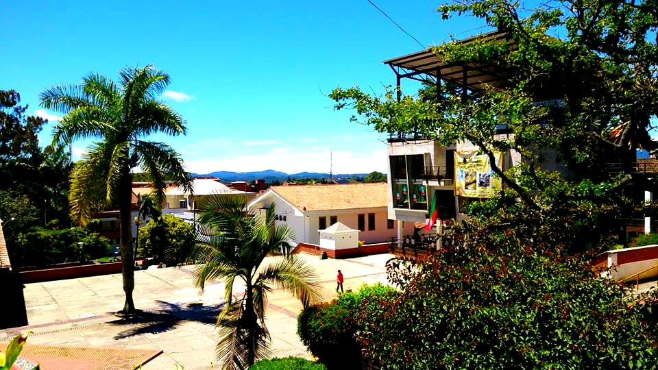
Un pueblo que conserva su memoria alrededor del paisaje del embalse.
Conocer el destino ↗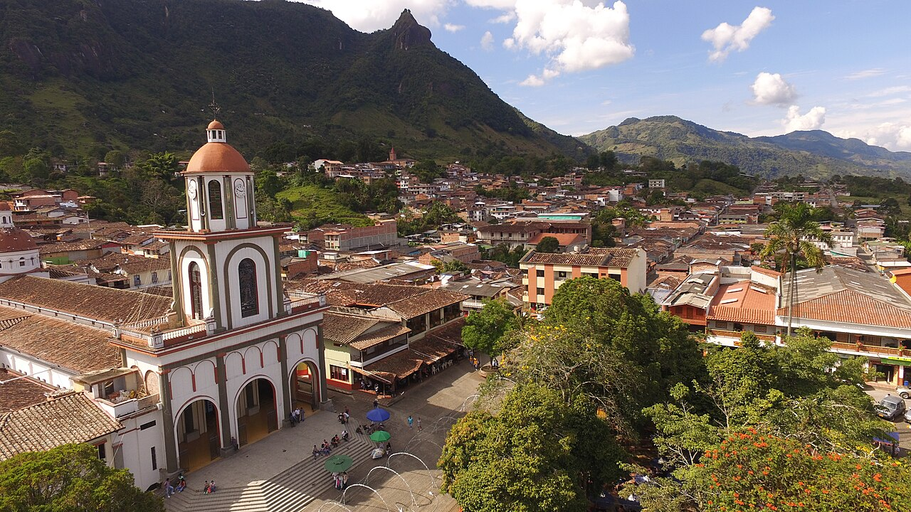
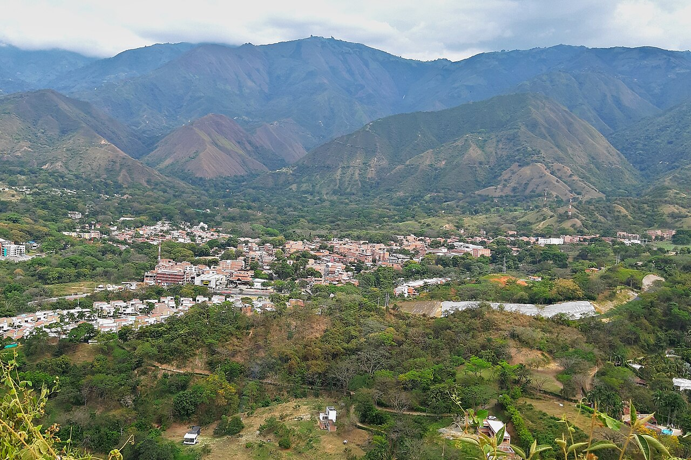
Vida de parque, sabores locales y paisaje cálido del Occidente.
Conocer el destino ↗
Descubre un pueblo del Occidente a través de su parque y sus tradiciones.
Conocer el destino ↗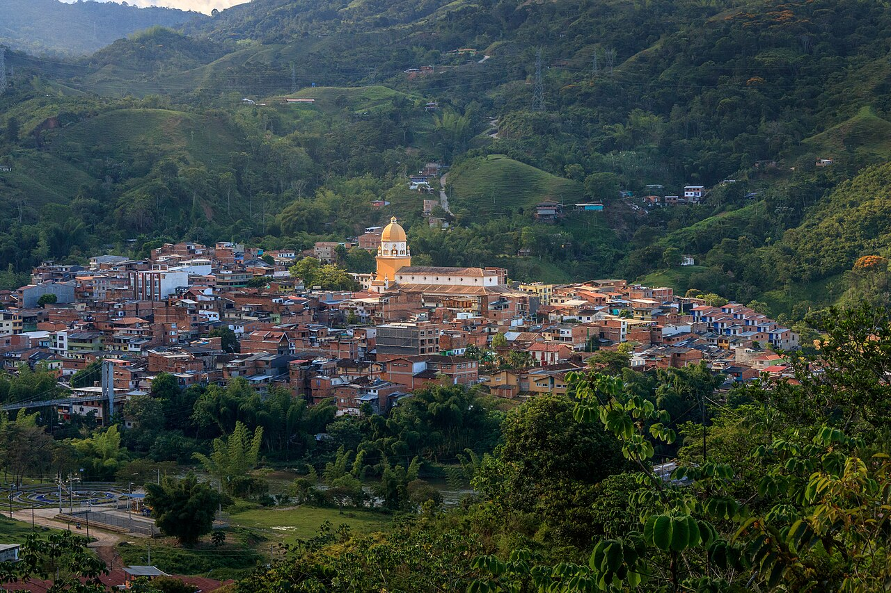
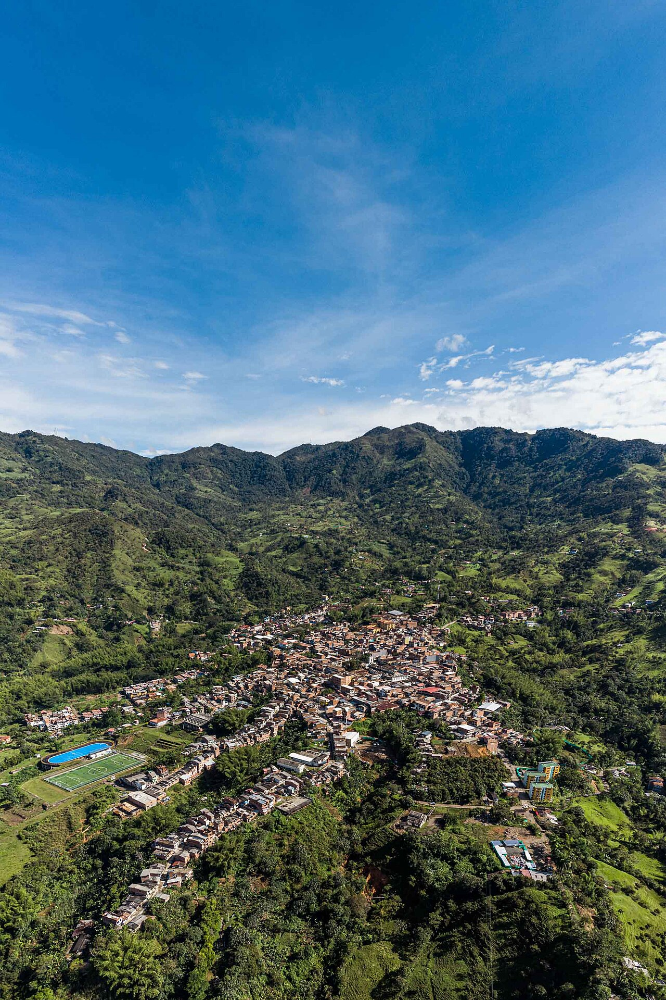
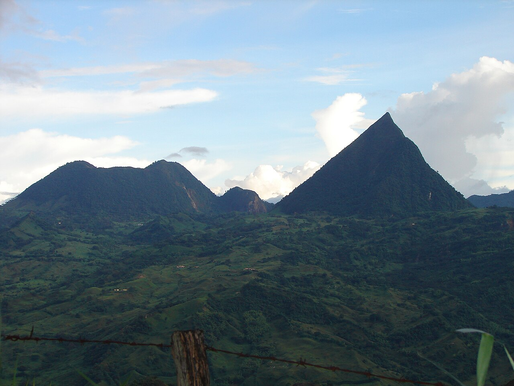

Calles tradicionales, trabajo en madera y naturaleza en el Oriente.
Conocer el destino ↗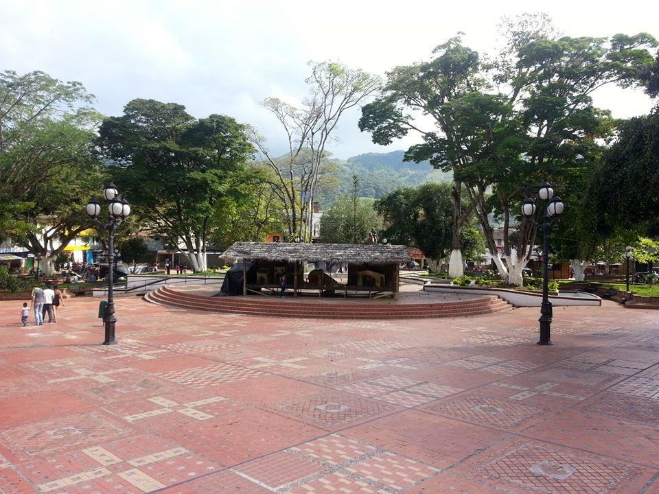
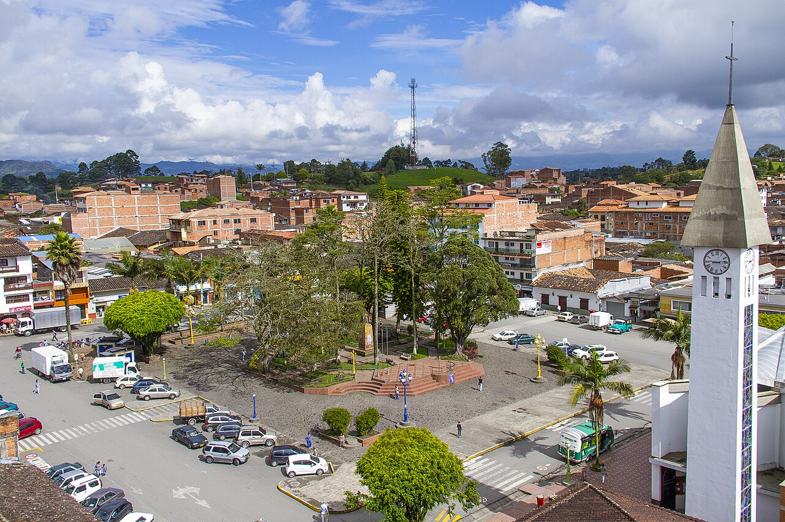
Cerámica, cultura y calles para descubrir el trabajo de sus habitantes.
Conocer el destino ↗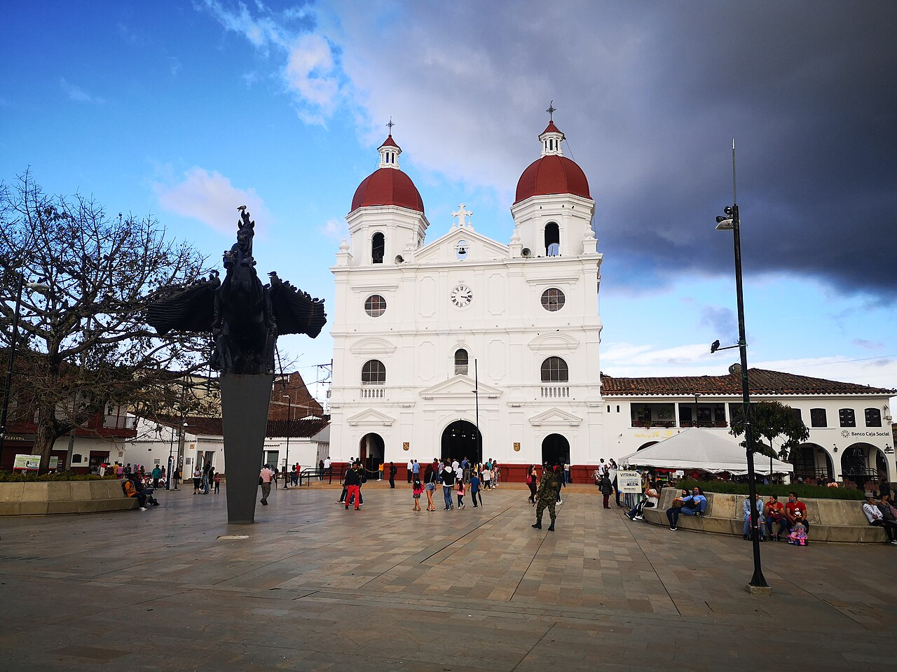

Arte, jardines, barrios, gastronomía y vida nocturna entre montañas.
Conocer el destino ↗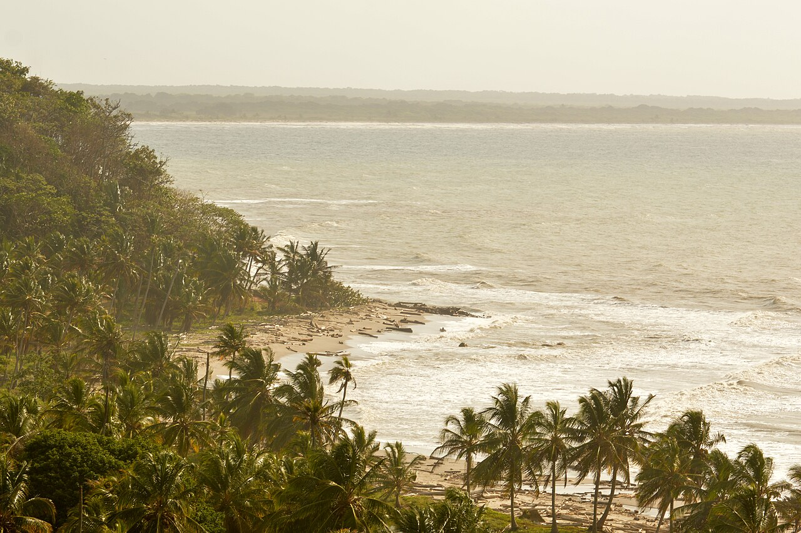

La costa Caribe y un volcán de lodo para descubrir otro paisaje de Antioquia.
Conocer el destino ↗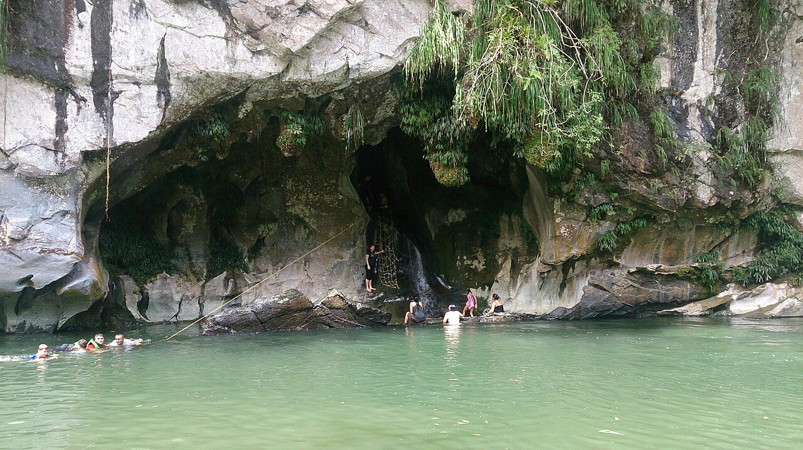
Vida junto al Magdalena y naturaleza en el corredor de Doradal.
Conocer el destino ↗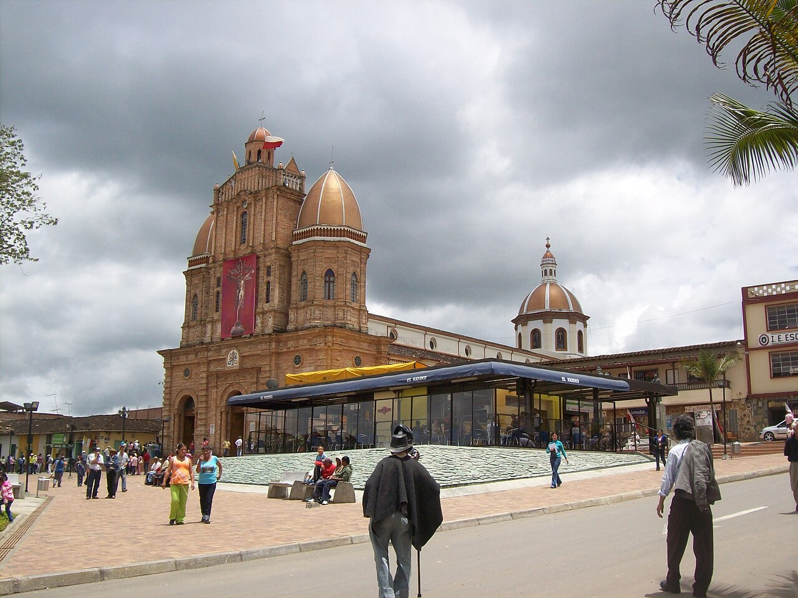
Patrimonio religioso y paisajes rurales del Norte antioqueño.
Conocer el destino ↗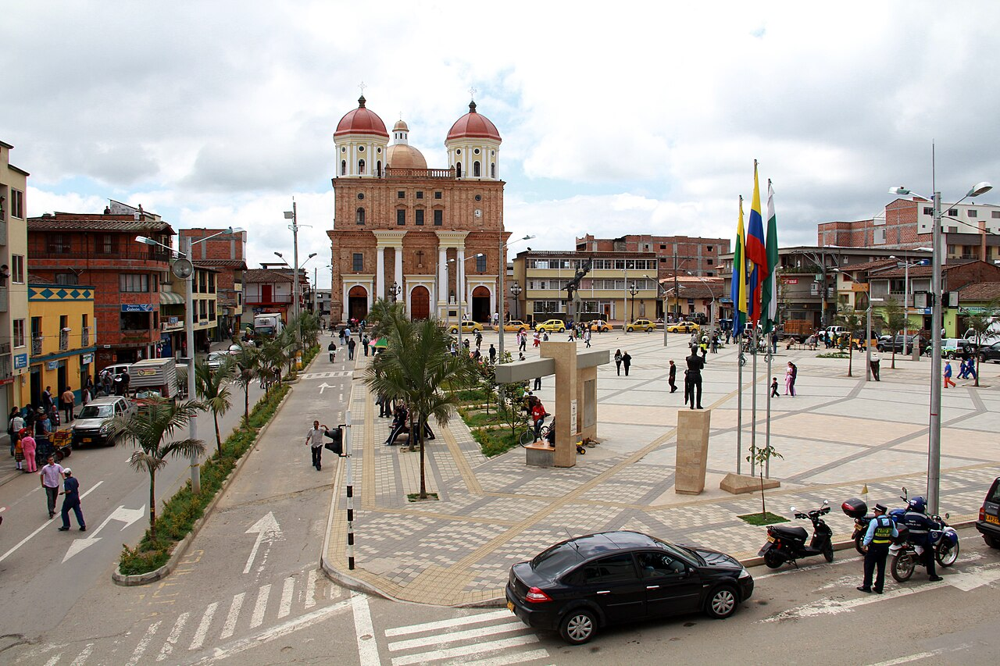
Las fotografías conservan sus créditos y licencias en la guía de cada destino.